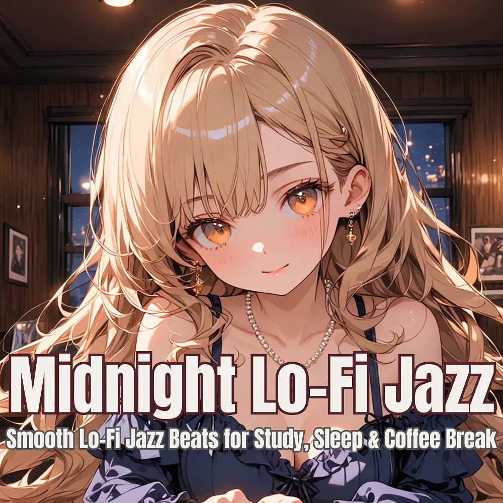

Lo-Fi · Jazz
Moonlight Lo-Fi: Jazz Beats for Study & Sleep
Nanashino-chan
Explore Moonlight Lo-Fi: Jazz Beats for Study & Sleep by Nanashino-chan: 24 instrumental tracks spanning Lo-Fi / Jazz. Start with First Sip / Warm Vinyl Mornings, preview the collection and find your favorites on streaming services.
2025-06-18 · Released · 24 tracks · Instrumental
Preview the album
The jacket stays here until you choose a track. Playback uses YouTube.
YOUTUBE PREVIEW
Choose a track to listen
The jacket stays here until you choose a track. Playback uses YouTube.
If playback is unavailable, open the album or track on the streaming service.
Find this album on streaming services
Links marked “search” open search results. Select the album or track on the service.
Track list 24
- 01First Sip
- 02Warm Vinyl Mornings
- 03Faded Letters
- 04Piano in the Rain
- 05Jazz on 3rd Street
- 06Gentle Steam
- 07Rustle of Memories
- 08.Slow Pulse
- 09Window Glow
- 10Late Night Blend
- 11Crackling Silence
- 12Wandering Thoughts
- 13Quiet Conversations
- 14Coffee for One
- 15Mellow Fade
- 16Familiar Corners
- 17Lo-Fi Lanterns
- 18Horns in the Dark
- 19Drift Session
- 20Inner Groove
- 21Books and Echoes
- 22Nocturnal Flow
- 23Last Drop
- 24Fade Into Brew
Find a sound for your next post
Copy “Nanashino-chan + track title” and paste it into your social app’s music search. Availability depends on your region and account. Copying the name does not grant usage rights.